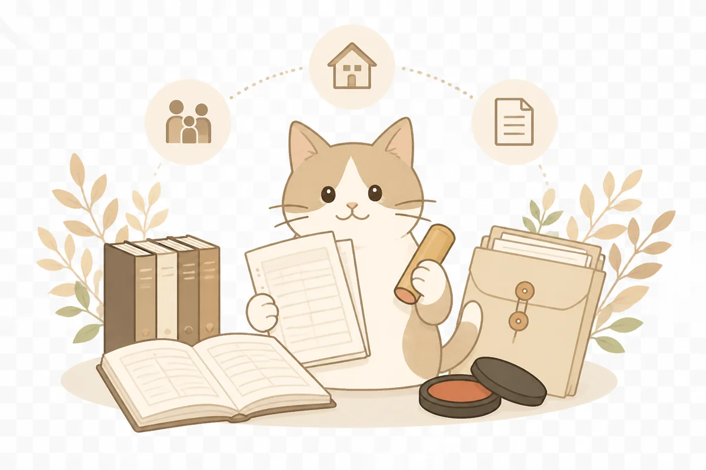

戸籍の集め方がわからない
どこからどこまで必要かを確認し、必要な戸籍を整理します。
相続戸籍収集サポートセンター
相続人の確定に必要な戸籍の収集から、法定相続情報一覧図、遺産分割協議書まで。忙しい方でもLINEで相談しながら進められます。

FOR YOU
FLOW

亡くなった方のお名前、本籍地、相続人の状況などをLINEでお知らせください。わからない部分があっても大丈夫です。
状況に応じて必要な戸籍の範囲と費用をご提示します。着手金10,000円のお支払い後に作業を開始します。
各市区町村への請求を代行します。収集した戸籍を読み解き、相続人を確定。必要に応じて法定相続情報一覧図・遺産分割協議書を作成します。
完成した書類をPDFまたは郵送にてお渡しします。残金のお支払いをもって完了です。
SUPPORT
どこからどこまで必要かを確認し、必要な戸籍を整理します。
収集した戸籍を読み解き、法定相続人を確認します。
法定相続情報一覧図や協議書作成まで対応可能です。
相談・進捗確認はLINE中心。全国からご相談いただけます。
PRICE
必要な範囲に合わせて選べます。
15,000円〜（税別）
相続手続きに必要な戸籍の収集をサポートします。
30,000円〜（税別）
金融機関や登記手続きで使いやすい一覧図作成まで対応。
65,000円〜（税別）
相続人間で合意した内容を文書にまとめます。
80,000円〜（税別）
戸籍収集、法定相続情報一覧図、遺産分割協議書までまとめて対応。
※ 表示料金はすべて税別です。戸籍取得費用・郵送費等の実費は別途必要です。
FAQ
はい、大丈夫です。戸籍を収集・調査することで法定相続人を確定できます。
住民票の「本籍地記載あり」を取得することで確認できます。対応方法もご案内します。
はい。LINEだけで完結します。来所は不要です。
不動産の相続登記は司法書士の業務です。必要な場合は信頼できる司法書士をご紹介することが可能です。
家庭裁判所への相続放棄申述は司法書士・弁護士の業務となります。負債が多いケースでは早期にご相談ください。適切な専門家へおつなぎします。
相続人間で争いが生じている場合は弁護士の業務となります。遺産分割協議書の作成は、相続人全員が合意していることが前提です。
相続税の申告は税理士の業務です。課税が見込まれる場合は税理士へのご相談をお勧めします。
CONTACT
必要な手続きがまだ曖昧な段階でも大丈夫です。